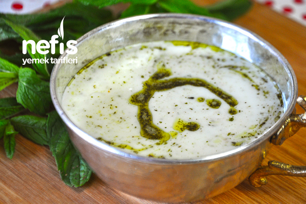

yayla çorbası
İÇİNDEKİLER
- 1 çay bardağı pirinç
- 3 su bardağı su
- 3 su bardağı sıcak su (tavuk veya kemik suyu)
- Tuz
- 1 adet yumurta sarısı
- 1,5 su bardağı yoğurt
- 1 yemek kaşığı un
- 2 yemek kaşığı tereyağı
- 1 yemek kaşığı kuru nane
- 5 yemek kaşığı sıvı yağ
YAPILIŞ
- Yayla çorbası için ilk olarak pirinçler yıkanarak suda yumuşayıncaya kadar haşlanır.
- Yayla çorbamızın terbiyesi için diğer taraftan yumurta sarısı, yoğurt, un bir kasede iyice çırpılır.
- Pişen pirinçlere varsa et ya da kemik suyu yoksa 3 su bardağı sıcak su ilave edilir.
- Çorbanın suyundan 1-2 kepçe alınarak yavaş yavaş alınıp terbiyeye ilave edilir.
- Hafifçe sulanan bu karışım ılınmış olan çorbaya ilave edilir ve 1-2 taşım kaynatılır.
- En son tuzu ilave edilir, bir kaç dakika daha kaynatılarak ocak kapatılır.
- Üzerine sos için kuru nane eritilmiş tereyağında kızdırılarak gezdirilir. Yayla çorbamız servise hazır. Afiyet olsun.
